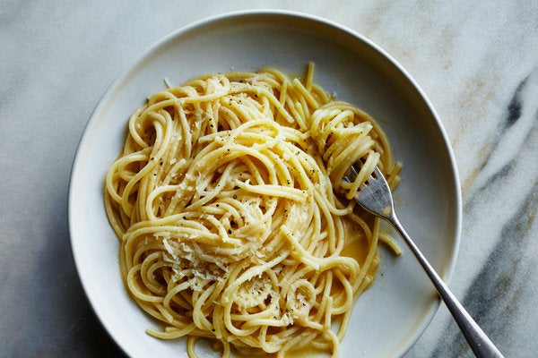

Pasta with Brown Butter and Parmesan

Another Italian Classic
Sometimes you just want a big bowl of pasta with butter and Parmesan. Starchy, silky and salty, it's always good — and practically foolproof. To make it a little more grown up, just take it one step further: Brown the butter. When you slide the butter into the skillet, let it cook until the milk solids turn a toasty brown. It adds a rich, nutty flavor that makes the dish a bit more sophisticated with very little extra work.
Ingredients
- Kosher Salt
- 1 pound spaghetti, linguine or other long noodle
- 8 tablespoons unsalted butter
- 1 cup freshly grated Parmesan, plus more for serving
- Freshly Ground Black Pepper
Instructions
- Bring a large pot of heavily salted water (2 heaping tablespoons kosher salt to about 7 quarts water) to a boil. Add pasta to boiling water and cook according to package directions until al dente. Reserve ½ cup of the pasta cooking water, then drain the pasta, but don't shake it fully dry.
- In a skillet or Dutch oven large enough to hold the pasta (and preferably with a light-colored bottom so you can see the butter solids brown), melt the butter over medium heat. Cook, swirling occasionally, until the foam subsides, the milk solids turn golden-brown and it smells nutty and toasty, 3 to 4 minutes. (Watch carefully to see that it does not burn. If it does, start over.) Remove from heat immediately.
- Add the cooked pasta to the skillet and toss with the brown butter. Stir in the cheese until melted. Stir in pasta water, 1 tablespoon at a time, until the pasta is glossy with sauce (you probably won't need the full ½ cup).
- Serve with black pepper and more Parmesan on top.